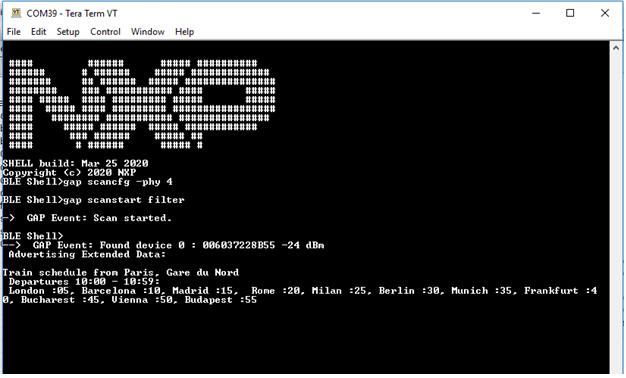
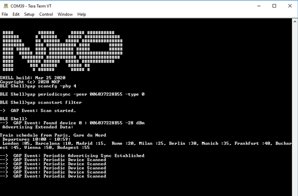
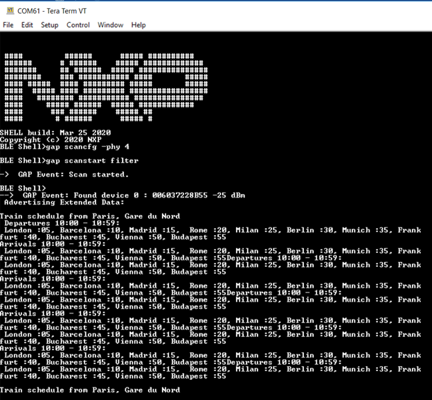

To use the Beacon application with the advertising extensions capabilities,
the gBeaconAE_c define must be set to 1. Doing this enables the usage of extended
advertising and periodic advertising. The application cycles between these modes are in
the following manner (the EXTADVSW button for FRDM-KW38 is SW3):
- First press EXTADVSW button starts legacy advertising
- Second press EXTADVSW starts extended advertising on the coded phy,
while also keeping the legacy advertising active.
- Third press EXTADVSW starts periodic advertising on the coded phy,
while also keeping the legacy and the extended advertising previously started
active.
- Fourth press EXTADVSW stops periodic advertising. Legacy and extended
advertising remain active.
- Fifth press EXTADVSW stops extended advertising. Legacy advertising
remains active.
- Sixth press EXTADVSW stops legacy advertising
As not all smartphones support extended advertising, a different method to
view the AE beacon is to use the ble_shell application. In order to do this, the
following steps must be taken:
- Flash a board with the beacon application, as described above.
- Flash a board with the ble_shell application, as described in Bluetooth LE Shell and connect to
it using a serial port.
- Press the EXTADVSW button two times on the beacon to start extended
advertising on the coded phy.
- To view the advertising data, enter the following commands in the shell
terminal to set the scanning phy to coded and start scanning.
Figure 1. Shell commands to view extended advertising

- To start the periodic advertising, press EXTADVSW button again on the
beacon.
- To sync with the beacon, issue the following commands on the shell terminal:
Figure 2. Shell commands to view the periodic advertising

As one can see, the extended advertising is still on when periodic advertising is started.
The peer parameter of the periodicsync command is the public address of the beacon.
Extended Advertising
with very large data
To use very large advertising data for extended
advertising, set the gBeaconLargeExtAdvData_c define to 1. The same steps are used to
view the data using ble_shell:
- Flash a board with the beacon application
- Flash a board with the ble_shell application, as described in Bluetooth LE Shell and connect
to it using a serial port.
- Press the EXTADVSW button two times on the beacon to start extended
advertising on the coded phy.
- To view the advertising data, enter the following commands in the
shell terminal to set the scanning phy to coded and start scanning.
Figure 3. Shell command to view extended advertisements with large
data
